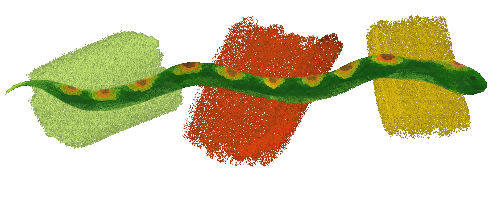

Welcome! I am Senior Research Associate at the Federal Reserve Bank of Boston. My interests are mainly in the philosophy of science and metaphysics. I have a particular interest in the methods of social science, especially economics. I have many other overlapping interests, including philosophy of law, philosophy of probability, statistical and causal inference, and social/political philosophy. I can be reached at liliayqian[at]gmail[dot]com.